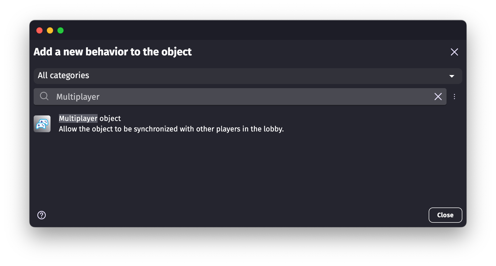
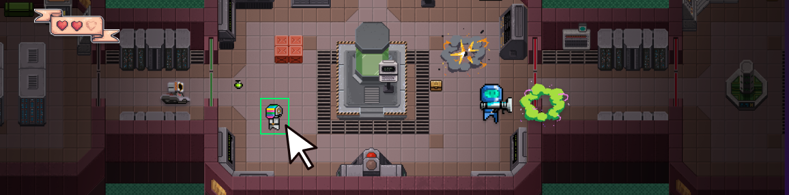

GDevelop 对比评测：给不想写代码的独立开发者留了一条活路
在同类无代码游戏引擎里，GDevelop 靠什么让老用户从竞品迁移过来？行为机制、资产商店、开源生态，我们一次说清它的差异化优势和取舍。
做游戏这件事，门槛在过去十年里被拉低了好几个量级。从早期 Flash 和 RPG Maker 的封闭生态，到 Unity、Unreal 把 C# 和蓝图推到台前，再到今天连 Scratch 都能做个 2D 平台跳跃——但真正能让一个没写过代码的人花一个周末做出可玩作品、还能导出到手机网页桌面的，数来数去就那几个。GDevelop 是其中我用得最久也最折腾的一个，去它的官网就能看到那句老口号：开源、无代码、跨平台。
同类格局里的位置
无代码游戏引擎这个品类现在大致分三档：头部是大厂方案，Unity 的 UEFN、Roblox 的 Luau 生态，它们背靠平台流量但语言和部署都是自家绑定；中间是跨引擎的视觉脚本工具，比如 Godot 的 GDScript 加可视化节点、Construct 3 的事件表；底层是给纯新手的 Scratch、Tynker 这类教学向产品。
GDevelop 比较特殊，它夹在中间偏下但又不完全属于那两层——说它是教学工具吧，行为机制和事件函数写复杂了能支撑中型项目；说它是专业引擎吧，3D 能力刚起步，跨平台导出的体验也不如 Unity 成熟。我把它归到「开源无代码独立开发者工具箱」这个更细分的赛道里，在这条赛道上它是目前最实用的选手，没有之一。
三个真的好用但别家没跟上的点
行为机制：把「写代码」变成「挂能力」
我第一次用 GDevelop 是因为朋友塞了个平台跳跃 demo 给我，后来自己下载装了编辑器才真正玩进去——打开一看一个玩家对象挂了「平台角色」「寻路」「缓动」三个行为，整个角色的移动逻辑、动画过渡、AI 追击就全有了——换成 Construct 3 或者 Godot，同样的事得在事件表里写十几个条件动作对或者写半页 GDScript。
行为这个设计本质上是把引擎里的预置逻辑打包成可组合模块，你给对象挂什么行为它就获得什么能力。官方内置的行为有上百种：平台角色管走跳重力斜坡，寻路管绕障碍追击，缓动管属性平滑过渡，物理管碰撞反弹，多人对象管联机同步……一个敌人实例挂寻路加血量扩展加缓动，AI、战斗、动画三件事同时搞定。更妙的是叠加无冲突——我见过最多一个对象挂了七个行为，各管各的维度，后挂的属性还能覆盖先挂的。

这件事听起来像插件市场，但和 Unreal 蓝图节点或 Godot 插件的区别在于：行为的参数全是可视化调的、事件里还能实时改，比如把平台角色的最大速度从 260 调成 400 只需要在事件里拖个动作，不用碰任何代码。对不想写代码的人来说这是巨大的心理门槛降低。
资产商店：从素材到模板一站式
第二个让我从 Construct 3 迁过来的原因是素材。做 2D 游戏最费时间的不是逻辑是资源——找一套风格统一的精灵、音效、UI 元素，往往比写完整事件表还耗时。GDevelop 把资产商店直接做进了编辑器右侧工具栏，内置几千套免费素材包，精灵、动画帧、音效、3D 模型、预制对象连完整游戏模板都有，搜到之后点「添加到项目」素材就以对象形式自动进了项目，贴图、动画、常用行为全部预配好，拖进场景就能用。

这意味着什么？意味着你开一个新项目，先从资产商店选个平台角色模板，再从免费素材包里搜个像素风敌人加音效，十分钟就能搭出一个能跳能打的 demo 框架。Construct 3 也有素材市场，但免费的少、质量参差不齐，很多好东西要花钱买积分；Godot 更惨，得自己去 OpenGameArt 或 itch.io 搜了手动导入。GDevelop 在这件事上真的把独立开发者的素材门槛降到了最低。
开源免费无锁定
最后一个差异化是它的开源属性。GDevelop 本身是 MIT 协议开源的，你可以看源码改扩展，也可以直接 fork 一份自己改。导出目标覆盖 Web、Android、iOS、Windows、macOS、Linux、Facebook Instant Games——而且所有导出格式都是免费的、没有分成、没有平台锁定。
对比一下：Unity 个人版年收入超 10 万要交版税、导出到移动端有集成限制；Construct 3 要订阅才能解锁 Android 导出；Godot 虽然也是开源但社区维护的跨平台导出工具链远没有 GDevelop 成熟。对想快速验证 idea 又不想被厂商绑定的独立开发者来说，这一点很重要。
它的取舍：便宜好用不是没有代价
说它好但也得说清楚它的短板。
第一是 3D。GDevelop 的 3D 支持是近两年才加的，目前能用 3D 模型、基本物理、简单材质，但和 Unity/Unreal 或者 Godot 的 3D 生态比差距还很大，做 3D 小游戏还行，做复杂 3D 项目别想了。2D 才是它的主场。
第二是事件表的复杂度天花板。行为机制好用但真到了逻辑特别复杂的项目——比如多人同步状态管理、复杂的对话树系统、程序化生成关卡——事件表会变得非常难维护。官方建议是给复杂对象写自定义行为来封装逻辑——具体怎么写行为、事件函数怎么组合，GDevelop文档里有完整的参数表和示例——但写自定义行为本质上还是在写 JavaScript，绕回代码了。
第三是跨平台导出的坑。Web 导出丝滑，但 Android 和 iOS 导出需要配置签名、证书、包名这些，对新手来说还是会卡壳。而且移动端性能优化、内存管理这些也没有太多官方文档，大项目上手机还是得自己摸。
还有一个隐性的取舍：生态规模。Unity 有 Asset Store 和大量第三方工具链，Godot 有庞大的社区插件市场，GDevelop 的社区行为市场和扩展库规模小得多，好用的第三方扩展也少。项目做大之后需要某类特定功能时，大概率得自己写。
选购结论
什么样的人选 GDevelop？
- 想快速做 2D 原型、不想写代码的业余开发者或学生；
- 做独立小游戏、需要多平台导出又不想被 Unity 版税绑定的个人开发者；
- 有编程基础但想加速 2D 项目开发、把精力集中在玩法上的老手——行为机制和资产商店确实能省很多时间。
什么样的人别选它？
- 做 3D 项目的，去 Unity 或 Godot；
- 做大型 MMORPG 或复杂网络同步的，事件表会崩；
- 追求极致移动端性能的，原生引擎更合适。
我自己现在还在用它。去年做了一个 2D 平台跳跃的独立游戏，从开项目到第一版可玩 demo 只用了三个晚上——资产商店选模板、挂行为、事件表写了二十几个条件动作对就跑起来了。最后导出 Web 版直接传到 itch.io 收集反馈，整个过程没碰一行传统代码。
给一个明确的推荐语：如果你想做 2D 游戏又不想写代码，GDevelop 是目前开源免费工具里体验最好的选择，没有之一。别等了，开项目试试——这套中文版资料我也同步维护在 GitHub、Gitee 和 GitCode 三个仓库里，国内访问 Gitee 或 GitCode 更稳一些。